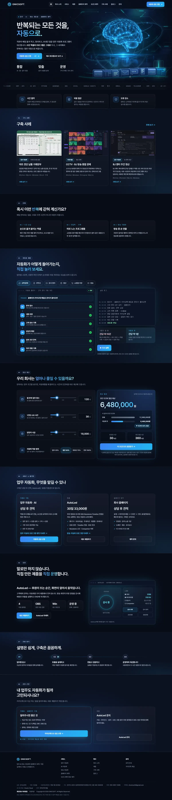

운영 중인 사이트08 / 11
ONICSOFT홈페이지
회사 소개, 제품, 모션그래픽, 구축 사례, 블로그를 담은 회사 홈페이지를 빌드 도구 없이 만들고, 올라가는 서버까지 직접 운영합니다.

화면 위에 마우스를 올리거나 누르면 페이지 끝까지 훑어 내려갑니다. 2026년 10월에 찍은 화면입니다. 실제 사이트 열기
이야기
- 01만든 것
- 빌드 도구 없는 정적 사이트입니다. 회사 소개, 서비스, 제품, 모션그래픽, 구축 사례, 블로그, 문의 페이지가 있고 PC와 휴대폰 화면에 맞춥니다.
- 02눌러 보는 화면
- AutoLed 데모와 자동화 체험, 절감 계산을 페이지에서 바로 실행합니다. 업종별 홈페이지 견본 20여 개를 만들어 직접 넘겨 볼 수 있게 했습니다.
- 03검색
- 사이트맵과 검색용 정보를 갖추고, 블로그 글은 서버가 글마다 페이지를 만들어 보여 줍니다.
사이트 밖에서 하는 일
- 국내 클라우드 서버를 직접 세팅하고 운영합니다. 도메인과 HTTPS 연결까지.
- 관리자 화면에서 블로그 글과 구축 사례를 직접 올리고 고칩니다.
- 글이 늘면 검색용 사이트맵을 서버가 알아서 다시 만듭니다.
- 보안 설정과, 지나치게 잦은 접속 자동 차단.
공개 범위 · 화면은 공개된 사이트를 찍은 것입니다. 서버 주소와 설정은 공개하지 않습니다.